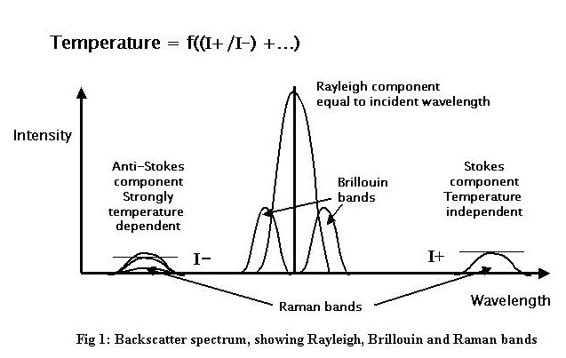

This document contains the following sections:
This document contains descriptions of data types produced by optic fiber based Distributed Temperature Survey data from oil wells.
This document describes a proposed transfer standard for Distributed Temperature Survey (DTS) data profiles measured using optic fiber techniques along wellbores drilled for the production of oil and gas. The DTS data are specified re-using many relevant WITSML definitions.
POSC gratefully acknowledges the contributions of intellectual property and expertise made by members and member companies of the DTS workgroup, especially BP, Halliburton, Sensornet and Shell.
It is anticipated that three kinds of audience will read this document.
First, petroleum geoscientists and engineers will seek understanding of the temperature data profiles which they use to monitor conditions in the reservoir and wellbore. In addition to the actual temperature data, the standard enables description of the equipment and software that has been used to record and process them, along with contextual data about the wellbore in which the measurements were made and when.
Second, software engineers who develop the data acquisition systems, the data transfer systems and the persistent data stores and application systems will also need to understand the content and format of the DTS data.
Third, data managers will need to understand the content and format of the data so that they can store it in persistent data stores and make it available to the applications used by the geoscientists and engineers.
For a fuller description of the technology of Fiber Optic thermometry, and its application to oil and gas production, please refer to the Shell docment "A DTS Primer for Oil & Gas Production". POSC gratefully acknowledges the availability and use granted by Shell International E&P of this DTS Primer as part of the basis of the proposed standard.
The application of optic fiber thermometry in oil and gas is a young and rapidly evolving technology. For this reason, any standard may anticipate several iterations and evolutions in its early years, and should be designed with a degree of flexibility. The challenges of installing and operating a delicate sensor - the optic fiber - in a remote and hostile environment - the oil well - are still being mastered. The survey process still has a significant experimental aspect to it, in addition to the natural variability of the processes the technique is being used to monitor.
The WITSML definition of wellbore as "a unique, oriented path from the bottom of a drilled borehole to the surface of the Earth" is particularly suited to DTS in that at least one end of the sensing fiber in a wellbore will always extend to the surface to connect with the Instrument Box. A fiber will not be physically joined or spliced into fibers from other wellbores in a well.
When light is transmitted along an optic fiber, transmitted light collides with atoms in the lattice structure of the fiber and causes them to emit bursts of light at frequencies slightly different from the transmitted radiation which propagate back along the fibre and can be detected at its end. This is known as backscattering. Optic fiber thermometry depends upon the phenomenon that the frequency shifts occur to bands both less than and greater than the transmitted frequency. Furthermore, in the case of the Raman shifted bands the intensity of the lower frequency band is only weakly dependent on temperature, while the intensity of the higher frequency band is strongly dependent upon temperature. The ratio of these intensities is related to the temperature of the optic fiber at the site where the backscattering occurs: i.e., all along the fiber. The backscatter spectrum is illustrated in Figure 1. The intensities of backscatter of individual pulses is very weak, necessitating statistical stacking of thousands of backscattered light pulses.

Several organisations manufacture and / or operate DTS equipment on a service basis for the E&P industry. The optic fibers are mass-manufactured by a number of companies with a variety of materials and designs for different applications. The 'Instrument Boxes' comprise a laser light source, an oven which provides a reference temperature, and photo-electric sensors which capture the backscattered light, along with digital circuitry which both controls the laser transmission and analyses the frequency and intensity of the backscatter. Instrument boxes and fibers can readily be interchanged.
The transmission characteristics of optic fibers are dependent upon several factors in addition to temperature, which include their construction, physical deformation and chemical , particularly aqueous, contamination. For these reasons, calibrations of the equipment are routinely necessary to monitor the transmission characteristics.
The location of the source of the backscattered light is determined in terms of its distance along the fiber by the two-way transmission time and the velocity of light in the transmitting medium. It is therefore necessary to know how length along the fiber correlates to measured depth along the wellbore in which the fiber is installed. The foregoing information includes knowledge of the positions in the well and along the fiber where connections through casing shoes, packers and other features occur. All these can be assumed to remain constant between initial installation and mechanical interventions in the wellbore.
There are several fiber configurations deployed in wellbores, illustrated in fig 2, which enable various calibrations to be made to the temperature data.
Two kinds of calibration are applied to DTS data. These are:
factors pertaining to the Instrument Box such as the oven reference temperature, the number of launches being stacked to get a temperature value at the required resolution;
factors related to the fiber, including the (practically linear) differential attenuation along the fiber, and the refractive index of the fiber.
Where the fiber may be installed in a well bore for several years, it is necessary to recalibrate these factors periodically in order to be able to compare reservoir temperatures over these periods.
The Optical Time Domain Reflectometry (OTDR) technique provides a routine means of examining the condition of the fiber. OTDR consists of observing the attenuation of backscattered light in the frequency band of the transmitted Rayleigh waves. An OTDR profile is illustrated in Figure 3.

The measurements produced by the Instrument Box for a temperature profile typically comprise a set of records containing contextual data followed by the temperature records. The contextual data identify the well, the equipment, the date and time, and various calibration data. Each temperature record contains the length along the fiber of the temperature sample, the computed temperature, and measurements of the Stokes and anti-Stokes intensities.
There are many possible representations of the temperature data, and criteria for selecting among them included: conformance to data produced from DTS instrument boxes; minimal verbosity of the XML transfer files; re-use of existing, implemented data specifications which satisfied DTS requirements; conformance to consuming data stores and applications, and others. POSC recognised the high degree of similarity of DTS data with other types of well logs, and chose to re-use of the existing WITSML wellLog specification which met all currently known requirements for DTS data.
POSC has defined standards for DTS data to be transferred between the oilfield well site and offices of oil and service companies. The DTS data standard should simplify, but does not specify, subsequent storage and access models and processes. Thus, the standard should improve the overall process of controlling and optimizing production operations. The standard specifies both the content and the representation of the data, in other words, it covers both the data, and their meaning, that need to be transmitted and what format they should be in.
Define XML schemas for DTS information for transfer from wellsite to office and office to wellsite, including information about the wellbore, the DTS equipment, its installation and calibration, and routine temperature survey data.
Given the immaturity and rapid development of DTS techniques, the standard is designed so as to be capable of use for other kinds of data such as pressure.
The DTS data standard re-used, where practicable, existing eXtended Mark-up Language (XML) assets developed for the E&P industry. In particular, DTS leveraged the WITSML (Wellsite Information Transfer Standard Mark-up Language) being developed and used by the drilling community.
The following functional requirements are identified but not described are out of scope:
the analysis, calibration and conversion of intensities of the backscattered light to temperature
storage in and retrieval from persistent data stores of DTS data
and non-functional requirements such as packaging, transmitting and verifying transmission of the data over communications networks.
The specification enables transfer of information for the following use cases, all of which assume the pre-existence of the wellbore and its data:
The activity of installing the fiber into the wellbore.
The recording of the position in terms of length along the fiber of key points in the wellbore.
The DTS workgroup, a part of the POSC Integrated Operations Special Interest Group, has defined the requirements outlined above, and POSC staff have produced the accompanying set of schemas which define the XML representation of DTS data, along with example XML files, detailed XML documentation, and this Overview. These items together comprise the contents of the package and its organisation in both the compressed file and the WITSML website.
DTS is modelled as follows:
The DTS specification utilizes the WITSML well and wellbore schemas to provide all of the related well data. This includes information such as operator, geopolitical location, geographic location, well datum, status, etc.
The fiber is intended to capture a description of the fiber as a material. Information about the installation and use of the fiber in the wellbore is captured in dtsInstalledSystem.
The first is the information that would be found in a manufacturer's catalog. This is a technical specification. It includes information that would be applicable for any fiber of the type described.
Secondly, it includes information about a specific “spool” of the fiber. This additional information would be spool number, length of fiber on the spool, and any factory calibration or quality checks that were done.
There are three generic elements that can be used to characterize the fiber.
type - The purpose of the type element is to classify the fiber, using various classification systems. A specific element, mode, allows the classification of singlemode or multimode. The type element allows other classifications to be made. The type element contains an optional attribute, classType. This, along with the classification, is a way of transferring additional information
Example: <type classType=”flexibility”>rigid</type>
parameter - This element allows any additional information that might be useful. These consist of name/value pairs, along with optional description and uom attributes. This is patterned after the element that is used in wellLog to capture uncontrolled parameters.
factoryCalibration - Any quality control or calibration tests that were run can be captured in this information. This does not include tests that are run in conjunction with installing the fiber, or obtaining measurements. There is a similar calibration capability with these objects.
The installationHistory element allows previous uses of the fiber to be recorded. If the fiber was installed in a wellbore at one time, removed, and installed in the same or different wellbore, the previous installation may be referenced. This is an optional element, but is included to allow the sender to give quality control information.
Like the fiber, the instrumentBox has two types of information. The first is the manufacturer's catalog set, which could be used to describe a generic instrument box of the type being used. The other information is related to a specific instrument box that is being used in the DTS system.
The instrumentBox has two generic elements to capture information. There is a parameter element which allows any information not specifically covered in the given elements. The other is the factoryCalibration element which allows specific calibration information that was done at the factory or at the bench. As with the case of the fiber, this is not intended to include calibrations that are done in conjunction with the installation of the fiber and instrument box in a wellbore, or calibrations done at measurement time.
The information about the length along fiber versus measured depth is recorded when the fiber is installed. This information is recorded in the dtsInstalledSystem object using the element, wellboreFiberSchematic. This element is key, because it stores the relationship between length along fiber and measured depth at certain, important points of the wellbore and fiber installation.
When a measurement is made, the data, as mentioned above, consists of the length along fiber. This information must be related to the wellboreFiberSchematic in order to obtain the measured depth information. However, it is generally not the case that the length along fiber in the wellboreFiberSchematic and the length along fiber in the measured data table have the same zero point. In order to match these two arrays, it is necessary that both the dtsInstalledSystem/wellboreFiberSchematic and the dtsMeasurement/ fiberDefinedPoint record a common point. A good policy for the DTS community would be to define which specific point should be used as the common point.
In addition to the specific point, it is necessary to capture the recording direction for a “U-shaped” installation. This is done in the dtsInstalledSystem/fiberEndPoint by giving names to the ports. The dtsMeasurement/fiberEndConnected refers to this port using the same name.
These measurements are part of the wellbore object and use the wellLog object to capture the temperature - depth profiles. Instances of the wellLog object may also carry the OTDR (Optical Time Domain Reflectometry) data.
In addition, WITSML includes an overall composite schema which has been defined to allow data from all of the data object schemas to be included in one document. This object is shown with only DTS objects and the wellLog object incorporated so that it becomes evident how the well, wellbore, and dts data can be incorporated into a single message. The hierarchical model for the composite is as follows:
The DTS specification includes the data object schemas, component schemas and element group schemas tabulated below. The composite, well, wellbore and wellLog schemas have been included for context.
| Schemas | Links to Documents | |||
|---|---|---|---|---|
| XSD Schema |
XML Document |
XML via Stylesheet |
Stylesheet Source |
|
| obj_dtsInstalledSystem.xsd | XSD | XML | XML/XSL | XSL |
| grp_dtsInstalledSystem.xsd | XSD | |||
| cs_fiberInformation.xsd | XSD | |||
| cs_fiber.xsd | XSD | |||
| cs_refractiveIndex.xsd | XSD | |||
| cs_oneWayLoss.xsd | XSD | |||
| cs_calibration.xsd | XSD | |||
| cs_calibrationParameter.xsd | XSD | |||
| cs_boxInformation.xsd | XSD | |||
| cs_instrumentBox.xsd | XSD | |||
| cs_nameTag.xsd | XSD | |||
| cs_instrumentBoxCalibration.xsd | XSD | |||
| cs_calibrationParameter.xsd | XSD | |||
| cs_fiberEndPoint.xsd | XSD | |||
| cs_fiberInstalledPoints.xsd | XSD | |||
| cs_singleInstalledPoint.xsd | XSD | |||
| cs_pumpActivity.xsd | XSD | |||
| cs_pumpLogTable.xsd | XSD | |||
| cs_pumpLogRow.xsd | XSD | |||
| cs_otdr.xsd | XSD | |||
| cs_calibration.xsd | XSD | |||
| cs_calibrationParameter.xsd | XSD | |||
| cs_commonData.xsd | XSD | |||
| cs_customData.xsd | XSD | |||
| Schemas | Links to Documents | |||
|---|---|---|---|---|
| XSD Schema |
XML Document |
XML via Stylesheet |
Stylesheet Source |
|
| obj_dtsMeasurement.xsd | XSD | XML | XML/XSL | XSL |
| grp_dtsMeasurement.xsd | XSD | |||
| cs_singleInstalledPoint.xsd | XSD | |||
| cs_errorReport.xsd | XSD | |||
| cs_commonData.xsd | XSD | |||
| cs_customData.xsd | XSD | |||
This schema is intended to be used in a stand alone fashion to describe equipment outside the context of WITSML. It intended to standard the usage of DTS Fibers in non-well contexts.
| Schemas | Links to Documents | |||
|---|---|---|---|---|
| XSD Schema |
XML Document |
XML via Stylesheet |
Stylesheet Source |
|
| ges_dtsFiber.xsd | XSD | XML | XML/XSL | XSL |
| cs_fiber.xsd | XSD | |||
| cs_refractiveIndex.xsd | XSD | |||
| cs_oneWayLoss.xsd | XSD | |||
| cs_calibration.xsd | XSD | |||
| cs_calibrationParameter.xsd | XSD | |||
This schema is intended to be used in a stand alone fashion to describe equipment outside the context of WITSML. It intended to standard the usage of DTS Instrument Boxes in non-well contexts.
| Schemas | Links to Documents | |||
|---|---|---|---|---|
| XSD Schema |
XML Document |
XML via Stylesheet |
Stylesheet Source |
|
| ges_dtsInstrumentBox.xsd | XSD | XML | XML/XSL | XSL |
| cs_instrumentBox.xsd | XSD | |||
| cs_instrumentBoxCalibration.xsd | XSD | |||
| cs_calibrationParameter.xsd | XSD | |||
These are other the WITSML schemas that are required in order to capture all relevant information for a Distributed Temperature Survey.
The composite schema captures the semantic contents of all WITSML objects within a single hierarchy. This allows a single XML message to contain all information that is relevant for a Distributed Temperature Survey. The XML example demonstrates how the measurement points to the installed system that was used for the measurement and to the resultant wellLog. In this example, only the name of the installed system is requied because the The details about the installed system had been previously transmitted.
| Schemas | Links to Documents | |||
|---|---|---|---|---|
| XSD Schema |
XML Document |
XML via Stylesheet |
Stylesheet Source |
|
| WITSML_composite.xsd | XSD | XML | XML/XSL | XSL |
The well object is used to define all of the contextual information about the well.
| Schemas | Links to Documents | |||
|---|---|---|---|---|
| XSD Schema |
XML Document |
XML via Stylesheet |
Stylesheet Source |
|
| obj_well.xsd | XSD | XML | XML/XSL | XSL |
| grp_well.xsd | XSD | |||
| cs_wellDatum.xsd | XSD | |||
| cs_refWellWellbore.xsd | XSD | |||
| cs_refWellWellboreRig.xsd | XSD | |||
| cs_location.xsd | XSD | |||
| cs_referencePoint.xsd | XSD | |||
| cs_location.xsd | XSD | |||
| cs_wellCRS.xsd | XSD | |||
| cs_projectionx.xsd | XSD | |||
| cs_geodeticModel.xsd | XSD | |||
| cs_localCRS.xsd | XSD | |||
| cs_commonData.xsd | XSD | |||
| cs_customData.xsd | XSD | |||
The wellbore object is used to define all of the contextual information about the wellbore.
| Schemas | Links to Documents | |||
|---|---|---|---|---|
| XSD Schema |
XML Document |
XML via Stylesheet |
Stylesheet Source |
|
| obj_wellbore.xsd | XSD | XML | XML/XSL | XSL |
| grp_wellbore.xsd | XSD | |||
| cs_commonData.xsd | XSD | |||
| cs_customData.xsd | XSD | |||
The wellLog object is used to define large tables of data. Each column is represented by a curve. The 'data' element within cs_wellLogData.xsd represents one row in the table. The wellLog can actually contain multiple tables of data where, for example, one block would represent a table for one pass in a wireline run. For use with DTS data there will normally be only one block.
| Schemas | Links to Documents | |||
|---|---|---|---|---|
| XSD Schema |
XML Document |
XML via Stylesheet |
Stylesheet Source |
|
| obj_wellLog.xsd | XSD | XML | XML/XSL | XSL |
| grp_wellLog.xsd | XSD | |||
| cs_wellLogCurveInfo.xsd | XSD | |||
| cs_axisDefinition.xsd | XSD | |||
| cs_blockInfo.xsd | XSD | |||
| cs_blockCurveInfo.xsd | XSD | |||
| cs_wellLogData.xsd | XSD | |||
| cs_commonData.xsd | XSD | |||
| cs_customData.xsd | XSD | |||
Copyright(c) 2005-2006 Petrotechnical Open Standards
Consortium, Inc. (POSC) All rights reserved.
POSC® and the
POSC logo® are registered trademarks and WITSML™ and the
WITSML logo™ are trademarks of POSC